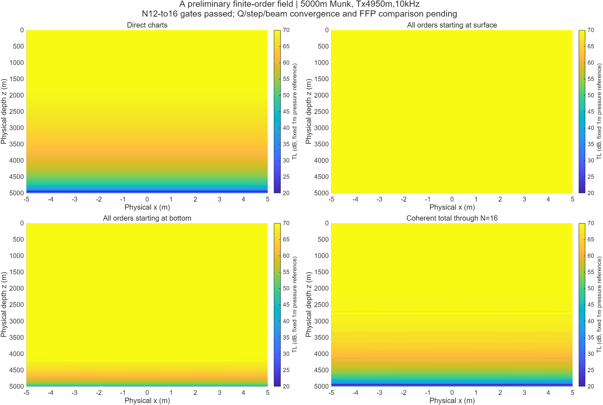
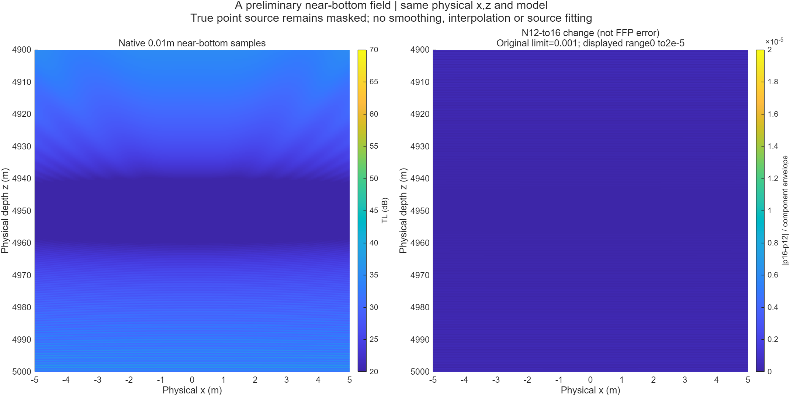
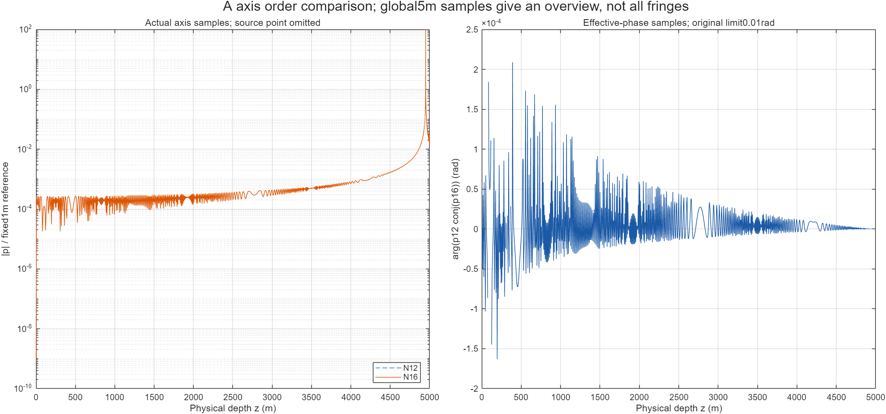

5000m Munk，Tx4950m，10kHz，全向三维点源和示例流体底。A的截断与原始数据审计通过；B/C/D和FFP共点比较尚未执行，非论文最终复现。
两反射族分别按最先命中的海面/底面分类，均包含后续混合反射；不是只含单次反射。TL=-20log10|p|，20至70dB仅显示范围，原始复声压未裁剪。



各图同名FIG可编辑；原始复数MAT位于相邻validation结果的assembly/result.mat。没有平滑、插值、任意幅相拟合；全深度5m网格只作概览，未解析所有波长尺度驻波。